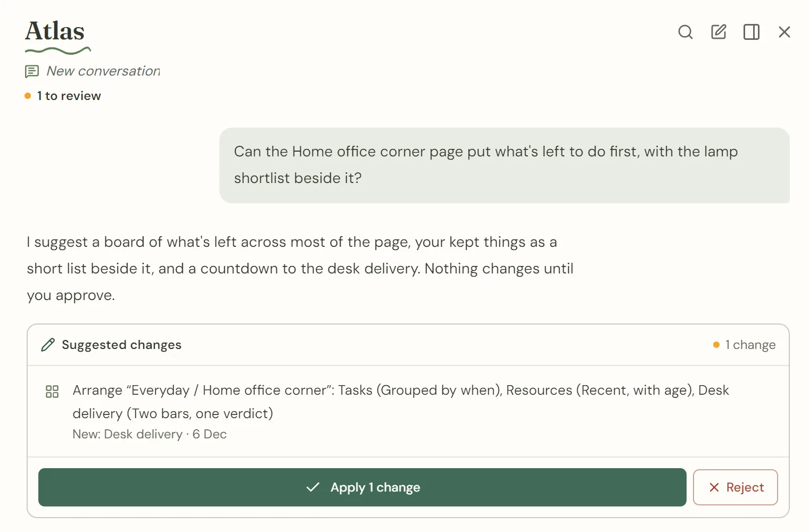
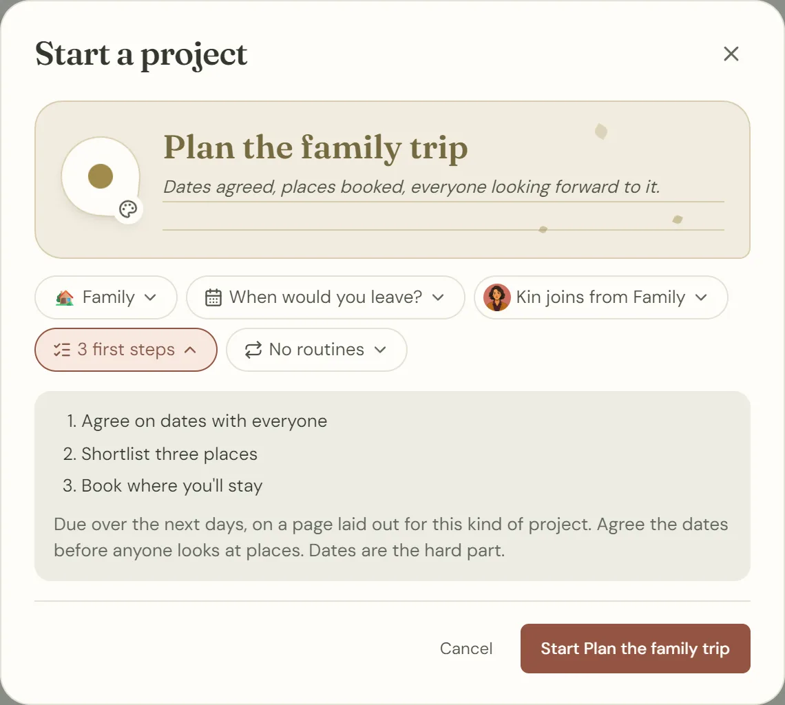
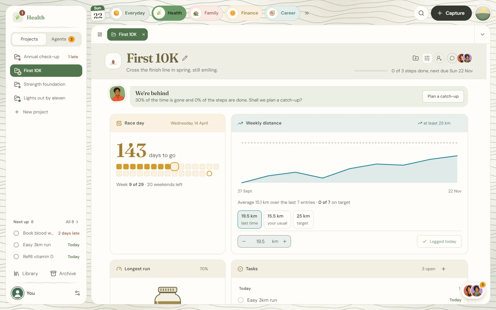
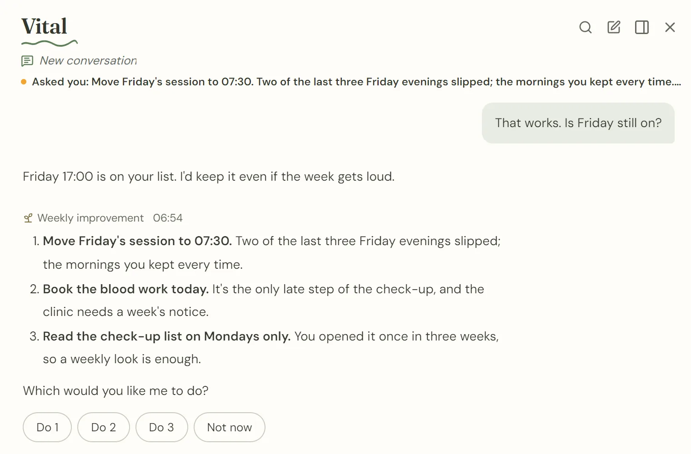
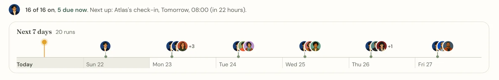
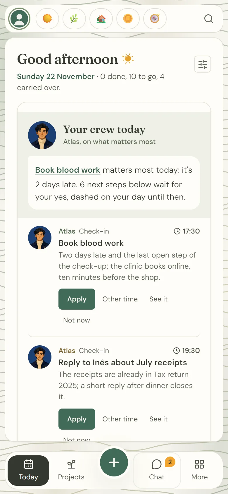
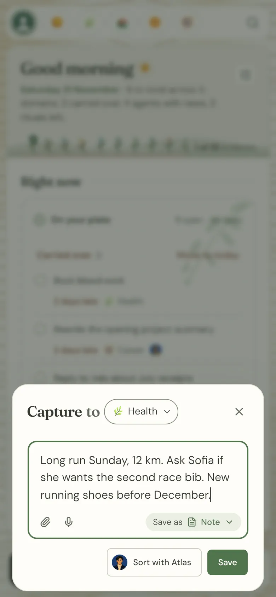

AI agents for your life that ask before they change anything.
Atlaswork keeps your notes, tasks and projects for home, family, health, money and career, with an AI agent looking after each. They plan, check in and suggest. You apply what you want and undo the rest.
Free, and now open source on GitHub.
- Atlas
- Hearth
- Vital
- Kin
- Ledger
- Compass
Your whole day on one page
Today lays your day out from morning to night. Tasks with a time stand at their hour, the rest wait in Anytime until you give them a place, and each agent suggests one next step at a free time, with its reason. Nothing moves until you apply it.

An agent for each part of your life
Atlas helps across the areas you allow. Hearth, Vital, Kin, Ledger and Compass each focus on one part of your life. You choose what every agent may read.
Atlas
Your thinking partner across the areas you allow.
Hearth
Home, chores and the small fixes.
Vital
Training, sleep and check-ups.
Kin
Family plans, visits and birthdays.
Ledger
Savings, bills and subscriptions.
Compass
Career, portfolio and learning.
Need someone else? Tell Atlas what you need help with and he suggests who fits: an agent already on your crew, a ready-made one such as Forge for an app or Tutor for homework, or a new one you shape yourself. Every area you add gets an agent of its own.
They suggest. You decide.
Ask Atlas to lay out a project page and you get a proposal, not a surprise. Apply it, reject it, or undo it later.
Agents you trust can act straight away, always with Undo. You choose what each one may read: notes, tasks, both or neither.
Agents remember what matters between conversations, and you can undo anything they remember. They ask each other for help only once you say yes.

Say what you want. The agent fills in the rest.
Every area opens with project ideas from its agent. Pick one, or type or say what you have in mind, and the agent fills in the name, finish date, first steps, who helps and the routines.
It lists what it guessed so you can check it, and nothing is saved until you press Start.
Ask for something that fits none of your areas and Atlas offers a new one with an agent to look after it. One Undo takes both back.


Routines that work while you're away
Each morning Atlas reads your notes and turns loose bullets into tasks. On Mondays he reviews: ticks off what your notes mark done and moves overdue tasks to today.
Every other agent suggests up to three improvements once a week, each with its reason. Tap the one you want and the agent drafts it for you to apply.
Routines can run with the app closed and send one quiet notification when they have something for you. Add your own check-ins, status reports and reviews, on the days and times you pick.


On your phone in a few seconds
Paste a link, type, drop a file or just speak. Capture saves it where you are, or Sort with Atlas turns a brain dump into tasks and notes where they belong.
Install Atlaswork from your browser. Today, Projects, Capture and Chat sit one tap away; swipe a task right to tick it off or left to move it to tomorrow. On Android, Atlaswork appears in the Share sheet.
Notes you write offline wait on your phone and save when you're back.


Your notes on every device. AI only when you ask.
Signed in, your notes and tasks live in your account and open on your phone and computer. Files you attach stay on the device that added them. Export a full backup any time.
Live AI replies need an internet connection. Your message and recent conversation, with only the notes and tasks that agent may read, go to the AI model you connected, under that provider's terms.
Connect OpenRouter in one click, or an API key from OpenAI, Anthropic or any OpenAI-compatible provider, and pay it directly.
Your Google Calendar, if you connect it
Connect Google Calendar in Settings and your events stand on Today's day line, so agents suggest steps only when you're free and can answer "What's on tomorrow?".
You choose for each agent whether it sees only when you're busy, reads your events, or may also offer to add dates, and which calendars. Agents read an event's title and times, never its description or guests, and Atlaswork doesn't keep your events.
An event is added only when you tap Add to Google Calendar. Disconnect any time and Atlaswork's access is gone. Read how we use Google Calendar data.
Questions
What is Atlaswork?
Atlaswork is a personal workspace for notes, tasks and projects across the areas of your life, with an AI agent looking after each area. It runs in the browser on computers and phones and installs like an app. It is made in Portugal by Carlos Oliveira, and its source is open on GitHub under the AGPL-3.0 license.
Can the agents change my notes without asking?
Only if you let them. You set each agent to ask first, so every change arrives as a proposal you apply or reject, or to act straight away with Undo. You also choose what each agent may read and which tools it may use.
Which AI answers, and is my data used for training?
The AI model you connect: OpenRouter in one click, or an API key from OpenAI, Anthropic or any OpenAI-compatible provider, billed by that provider. A reply sends only your message, the recent conversation and the notes and tasks that agent may read. Whether your provider keeps or trains on them is set by its terms.
Is Atlaswork open source?
Yes. The app, the backend and the Windows app are on GitHub under the AGPL-3.0 license. You can read the code, run your own copy and contribute.
Does it work on my phone?
Yes. Install Atlaswork from your phone's browser. Phones get their own layout with Today, Projects, Capture and Chat one tap away, and on Android Atlaswork appears in the Share sheet.
Do my notes sync between devices?
Yes. Signed in, your notes and tasks live in your account and open on every device. Files you attach stay on the device that added them. You can export a full backup at any time and delete your account from Settings.
When can I use Atlaswork?
Now. Open the app and sign in with Google or your email. It's free with an AI model of your own.
Start now
Sign in with Google or your email, connect an AI model of your own, and meet your crew.
Atlaswork is open source under the AGPL-3.0 license. Read the privacy notice and the terms.